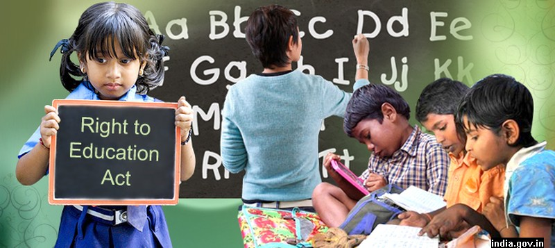

Child Rights and You

We aim to achieve measureable impact through the following process:
- Identify the problem
Any issue that causes a child rights violation like female foeticide or child labour, is a symptom of deep-rooted problems such as lack of livelihoods, caste or gender bias. We identify these violations and work with the communities to demand accountability from the government and permanent solutions and/or mitigate the impact of these deep-rooted problems on children.
- Child Rights Violations
Partner with Grassroots NGOs
To achieve far-reaching impact on a large scale, we enable grassroots NGOs by providing them with funds, programme monitoring, building their skills, perspectives and capacities in addressing issues that affect children and their families.
- Mobilise Local Communities
Through interactions, workshops and trainings with communities, we make them aware of their due entitlements from the government to bring about a better living for themselves and their children.
- Create Awareness
We sensitise people on issues that affect children and cause child rights violations through various mediums of communication. We also form or participate in networks and alliances to lobby for child-friendly policies.
- Get Public Support
We generate funds and resources (voice, time, skills) from individuals like you and through institutional partnerships. We encourage people from all walks of life to contribute in creating an environment in which children enjoy their basic rights.
- Enable Change
Thus, CRY works towards ensuring children live, learn, play, express themselves…bringing about lasting change in their lives.